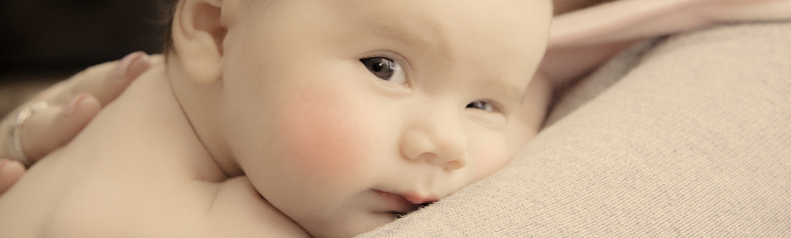

Blog of Ania Hughes
It takes a village...but I'm all alone
Once upon a time we lived in small villages with friends and family on our doorsteps. Mothers, sisters, aunts and grandmothers all helped in raising the next generation. Fast forward to present day and our support network has often near disappeared.
We live near work often in cities away from family with friends in similar work patterns to ourselves. So if it takes a village to raise a child what happens when you realise you are alone?
In the early days after your baby has been born it can be difficult to feel social – but if you feel lonely or isolated it is definitely worth the push.
Often the NCT run local coffee mornings for local mums similar to yourself which can lead to new friendships and a good excuse for a natter. There are also many “Bumps and Babies” groups which similarly get you to meet other mums with babies the same age (and similar levels of sleep deprivation). These are often held in local community centres or places of worship – usually advertised by good old fashioned notice boards and word of mouth.
Health Visitors and Midwives will give you information on your nearest children centre. These also often have coffee mornings, baby classes and are fantastic for general advice whether it is baby care, potty training or more sensitive issues such as mental health, domestic abuse and housing.
Do seek out activities like Baby Sensory and Baby Massage classes.
Baby stimulation aside it is a great way to meet other mums.
Like school you’ll meet a range of characters and gravitate to those you feel comfortable with.

But what about the practicalities? What if you could use another pair of hands? To shower, go to the loo or take little one out for a walk? If you haven’t friends or family in the early days and other half has to work or is as shattered as you then you may want to consider a postnatal doula.
I’ll be honest, when I discovered postnatal doulas existed I cried as I discovered it two years too late.
Many know doulas as professional birth companions – however there are many out there who offer post natal support as well.
This could be anything from doing a shop to holding baby while you sleep – think of them like extended family help.
Support like this can prove to make the early days just that bit easier.

So remember we still are in a village and the support is out there.
You just need to make the first step to find it.
Learning how to love your baby
Many songs, films and poems exist about love. We have all known love of some description, whether it was from our family, partner, friends or a pet.
Yet despite this it turns out a mother’s love is completely different. I’ve heard it described in a huge variety of terms, varying from all-consuming and terrifying, to life changing and awe inspiring. But how do mothers love?
At the point of birth, many women exclaim their "instant love" for their babies. Others find it’s not so simple. But there’s no right way to love your baby – there’s just your way.
Think back to before your first meeting with the father of your child. If someone had said, "This man is it. He is your moon and stars and will father your children", would you have loved him at first sight? Very few people would.
It’s no different with a baby. They are a new person. Baby needs to get to know you, and you need to get to know them. Many mothers describe an overwhelming urge to protect their newborn, but don’t necessarily label that “love” – although you could argue that is the beginnings of love.
The important point to stress is that love is not static – it grows and changes. The relationship and love you have with your parents and partner evolves and develops over time, and the same is true with your baby. Love will grow.
The difficulty with this new relationship for many new mums is the mismatch between need and communication. A mother will need to learn about how to care for her baby, while her baby has yet to figure out that they are even a person.
A baby can only communicate what it needs in a simple way: non-verbally. This is a language we are no longer fluent in – it means that as mothers we are watching these new small beings and trying to read their cues. It’s not an easy task and takes a lot of mental effort for an already tired mum, as well as a lot of trial and error.
But you know what? Even if you feel all you do is attend to their needs, you are showing your baby they are loved, cared for and safe. This is the first step.
If you want to enhance and deepen your love for your baby, here are some activities that may help:
- Take time to admire - Choose one thing about your baby that you can admire. This could be watching them while they sleep, admiring their small toes, or watching their face as you sing them a lullaby. Do one of these things a day and you'll soon find you have a whole catalogue of things to love.
- Do something together - This doesn’t need to be anything elaborate, just a time to be with each other. Feeding the ducks is a great example of a few moments of spending time together. Or just sitting in the garden or park, watching the world go by. The activity doesn't matter; making the time shows your baby they are loved and important.
- Be kind to yourself - Life is not a movie. Love takes time, and it will come. Remember that through choosing to care for your baby’s needs, you already love them.
The term “motherly love” often puts images into people’s heads of their own mothers, or ideas about what they should be feeling according to what others have told them.
The problem with holding yourself up to an ideal is that it’s impossible to achieve. When you learn to let go of a preconceived notion of what love should be and sit down with your baby, only then can you discover what it really is.
Preparing to be a mother
It’s becoming more common for expectant parents to attend some form of antenatal education classes to prepare for the birth of their babies. For many, this is often the first step towards becoming a mother (or father) by putting the needs of the new member of your family first. Also, it often helps alleviate any fears a mother may have about labour, and can help couples become more informed about their choices on their birthing day.
As a HypnoBirthing practitioner, I often help couples like this prepare. I often tell my couples that not thinking ahead is like putting all your energy into planning your wedding day without much thought about the marriage itself.
Many mothers often have a feeling of "What am I supposed to do now?" once the first days are behind them and the last visitors have left. So how can you prepare to be a mother?
Once antenatal classes are done and dusted and preparations for labour are complete, I'd suggest taking some time to think about a few postnatal practicalities.
Self-Care
This is top of the list because it’s very important and often overlooked by new mothers as a necessary sacrifice. Think about what you'd like to prioritise doing to feel like yourself when time is limited.
Some people just need a shower, while others can get by on a good brush of their teeth and face wash, or maybe just having a cup of coffee. Write down two or three things that are your "must do", and either discuss it with your other half or simply put the list somewhere you – and anyone helping out – can see – and make sure you carve out the time to do something for yourself. This may well mean you'll end up showering with your baby, but it means you have time to feel a bit more human.

The House
Most people know that with a new little person the house is not your biggest priority. But there are things that will need to get done from a practical point of view. Food needs to be bought, cooked – or reheated! – and laundry needs to be done.
So make a plan – perhaps set up an online food delivery. Sites like mysupermarket have quick shopping list sections. This means you only need to write what you need in once, and you can then go and order your shop quickly and have it delivered straight to your door. Another idea could be to cook extra meals before your new arrival and have them to hand in the freezer.
If you have the income, consider employing a cleaner. If not, you could ask willing friends or family to help out, or simply plan which jobs are essential and what can be left for the time being.
Visitors
This is a personal preference. Some new parents love the privacy of a babymoon and want some time to themselves. Others can't wait to share their new addition with the world. It's important that new parents discuss their wishes ahead of time and let friends and family members know.
In the case of the babymoon couple, it prevents offending those relatives desperate to pay you a visit and bestow gifts. Those parents who are happy to welcome visitors need to set clear expectations.
If visitors do come, they need to know not to stay too long (or with you). You could ask them for practical help with some jobs around the house (from a pre-prepared list on the fridge, perhaps). It helps to be clear that you are not there to be play host. Perhaps think about having a code word with your partner so that if it’s getting too much your partner can start escorting them out the door?
When you feel you’re ready for your birth and the change in lifestyle that comes with a new baby, it’s time to take the next step: now it's time to prepare your heart for your baby.